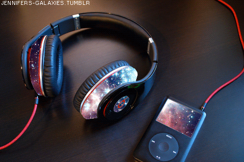
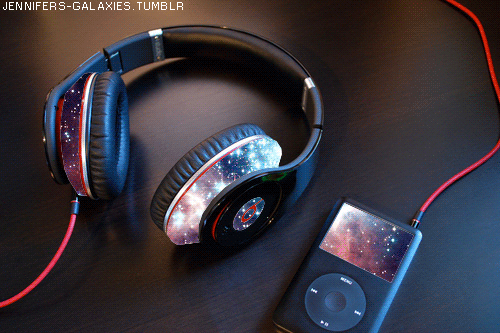

MACIRRSS
Manual sobre Ciberseguridad en las Redes Sociales en la web 2.0
Sección 1
HOLA ME LLAMO CARINA :3
¿Qué Es La Cyber Seguridad?
Es la práctica de defender las computadoras, los servidores, los dispositivos móviles, los sistemas electrónicos, las redes y los datos de ataques maliciosos. También se conoce como seguridad de tecnología de la información o seguridad de la información electrónica. Como un conjunto de medidas de protección de la información, a través del tratamiento de las amenazas que ponen en riesgo la información que es tratada por los sistemas de información ¿Para Qué Sirve La Cyber Seguridad? PROTEGER Capacidad para limitar o contener la probabilidad e impacto de incidentes de seguridad. RESPONDER Contención del daño asociado a un incidente de seguridad y recuperación del estado anterior. IDENTIFICAR Reconocer el contexto, tanto externo como interno, para identificar los riesgos. DETECTAR Descubrimiento temprano y contextualizado de incidentes de seguridad. ¿Por Qué Es Importante La Cyber Seguridad? La seguridad informática se encarga de asegurar la integridad y privacidad de la información de un sistema informático y sus usuarios.

Sección 2
¡Yeiiiiiii!
:D
¡Ayudaaa!
:(
¡Hoooo Cuidado!
:O

Sección 3
¿Qué Es La Web 2.0? Es un modelo de páginas Web que facilitan la transmisión de información y la colaboración entre sus usuarios, mediante un diseño centrado en sus necesidades, más que en las de la empresa. En otras palabras, se trata de una tendencia en la Internet que aboga por una red más interactiva, menos unilateral, en la que los usuarios no ocupen un rol meramente pasivo. ¿Para Qué Sirve La Web 2.0?
Para aprender es más eficiente, ya que los estudiantes incorporan trabajo colaborativo siendo parte activa del mismo. Este construye conocimiento de forma colectiva volviéndose parte activa del ejercicio y generando nuevas inquietudes que estarán resueltas de forma objetiva por el docente o tutor que tiene un menor protagonismo.
¿Por Qué Es Importante La Web 2.0? Por el incremento de interés en herramientas web. En gran número de casos se incrementa la actividad en la web perdiendo el miedo y entrando con mayor naturalidad a usar herramientas que posiblemente antes le eran desconocidas o a reafirmar el uso de las mismas para aquellos que ya tenían práctica. De igual forma con la diversificación del uso de diferentes herramientas web 2.0 podrán ver los beneficios del aprendizaje colaborativo.Sección 4
¿Qué Son Las Redes Sociales? Son sitios y aplicaciones que operan en niveles diversos – como el profesional, de relación, entre otros – pero siempre permitiendo el intercambio de información entre personas y/o empresa,Cuando hablamos de red social, lo que viene a la mente en primer lugar son sitios como Facebook, Twitter y LinkedIn o aplicaciones como Snapchat e Instagram, típicos de la actualidad. Pero la idea, sin embargo, es mucho más antigua: en la sociología, por ejemplo, el concepto de red social se utiliza para analizar interacciones entre individuos, grupos, organizaciones o hasta sociedades enteras desde el final del siglo XIX.En Internet, las redes sociales han suscitado discusiones como la de falta de privacidad, pero también han servido como medio de convocatoria para manifestaciones públicas en protestas. Estas plataformas crearon, también, una nueva forma de relación entre empresas y clientes, abriendo caminos tanto para la interacción, como para el anuncio de productos o servicios. ¿Para Qué Sirve Las Redes Sociales?
Para compartir fotos o dejar comentarios. Son una gran fuente de información que nos permiten seguir aprendiendo en nuestro ámbito profesional, participar en algún tema de debate e incluso encontrar oportunidades profesionales que pueden cambiar el futuro de nuestra carrera.
¿Por Qué Es Importante Las Redes Sociales? Nos permiten crearnos una vida y desarrollarla. Nos permiten interactuar con personas que quizá están en la otra parte del planeta, nos permiten conectar, crear contenidos, compartirlos y difundirlos.
Sección 5
¿Definición Del Software De Desarrollo?
Como su nombre lo indica, un software de desarrollo es un programa que permite el desarrollo de aplicaciones, algunos de estos son java, visual basic, c++, etc. El software de desarrollo comúnmente se conoce por IDE (Integrated Development Environment, por sus siglas en inglés). Se utiliza para hacer programas en diferentes lenguajes (C++, Java, Python, Lisp, etc). el software de desarrollo se les llama a los que se usan para crear aplicaciones o programas tenemos para Web HTML, Dreamweaver, NVu, Publisher entre otros, para crear programas tenemos muchos dependiendo del lenguaje de programacion en el cual vamos a trabajar, para desarrolo de Bases de datos tenemos el SQL Development, PostgresSQL, Mysql entre otros .
Sección 6
¿Qué Utilice?
Bueno es preciso indicar los periféricos de entrada que necesitarían un usuario para utilizar el software:
¿Que es una computadora? También denominada computador u ordenador, es una máquina digital programable que ejecuta una serie de comandos para procesar los datos de entrada, obteniendo convenientemente información que posteriormente se envía a las unidades de salida. ¿Que es el mouse? El ratón o mouse es un dispositivo apuntador utilizado para facilitar el manejo de un entorno gráfico en una computadora. Generalmente está fabricado en plástico, y se utiliza con una de las manos. ¿Que es el teclado? En informática, un teclado es un dispositivo o periférico de entrada, en parte inspirado en el teclado de las máquinas de escribir, que utiliza un sistema de botones o teclas, para que actúen como palancas mecánicas o interruptores electrónicos que envían toda la información a la computadora o al teléfono móvil. Y en los periféricos de salida son: ¿Que es un monitor? El monitor de PC, también llamado monitor de ordenador, pantalla o pc en España, Guatemala y monitor de computadora en Hispanoamérica, es el principal dispositivo de salida, que muestra datos o información a todos los usuarios. ¿Que son los auriculares? Un auricular es un transductor que recibe una señal eléctrica originada desde una fuente electrónica y que por su diseño permite colocar cerca de los oídos unos altavoces para generar ondas sonoras audibles. El único programa para utilizar el software: ¿Que es el navegador? Un navegador web es un software, aplicación o programa que permite el acceso a la Web, interpretando la información de distintos tipos de archivos y sitios web para que estos puedan ser vistos Y para todo mi confiable cuaderno :3 ¿Que es el cuaderno? Un cuaderno es un conjunto de hojas de papel, impresas o en blanco, unidas con una espiral o dobladas, encajadas o cosidas, que forman un libro delgado,Los artistas usan a menudo grandes cuadernos que incluyen amplios espacios de papel en blanco para poder dibujar. Los abogados son también conocidos por usar cuadernos grandes que suelen llevar papel rayado y son apropiados para usarse en mesas y escritorios. Las rayas horizontales de estos cuadernos pueden ser más o menos anchas permitiendo más o menos líneas de escritura. Los periodistas prefieren cuadernos de pequeño tamaño para poder ser llevados fácilmente y a veces usan la taquigrafía para tomar notas. Los científicos y otros investigadores usan cuadernos de laboratorio para documentar sus experimentos. Las notas de estos cuadernos son a menudo de cuadrícula para facilitar el trazado de datos. ¿Que es un lapiz? Un lápiz o lapicero es un instrumento de escritura o de dibujo consistente en una mina o barrita de pigmento y encapsulado generalmente en un cilindro de madera fina, aunque también en envolturas plásticas, de papel y metal,Los lápices modernos se fabrican industrialmente mezclando el polvo de grafito y arcilla molidos finalmente, agregando agua, formando minas largas que se cuecen en un horno (compartimientos térmicamente aislados). Las minas resultantes se sumergen en aceite o cera fundida, que se filtra en los agujeros minúsculos del material, dando por resultado una escritura más lisa. Un tablón de madera con varios surcos paralelos largos que se corta para formar un listón, y las tiras de grafito y arcilla se insertan en los surcos. Otro tablón acanalado se pega encima, de manera que el ensamble final es cortar todo en lápices individuales, que luego se barnizan o se pintan. 

Sección 7
¿Qué Herramientas utilice en la creación de mi pagina?
Las Herramientas Que Utilice Fueron: GitHub: Es una forja para alojar proyectos utilizando el sistema de control de versiones Git. Se utiliza principalmente para la creación de código fuente de programas de ordenador. El software que opera GitHub fue escrito en Ruby on Rails. Desde enero de 2010, GitHub opera bajo el nombre de GitHub, es un servicio basado en la nube que aloja un sistema de control de versiones (VCS) llamado Git. Éste permite a los desarrolladores colaborar y realizar cambios en proyectos compartidos, a la vez que mantienen un seguimiento detallado de su progreso,Como su nombre indica, la web utiliza el sistema de control de versiones Git diseñado por Linus Torvalds. Un sistema de gestión de versiones es ese con el que los desarrolladores pueden administrar su proyecto, ordenando el código de cada una de las nuevas versiones que sacan de sus aplicaciones para evitar confusiones. Así, al tener copias de cada una de las versiones de su aplicación, no se perderán los estados anteriores cuando se va a actualizar. Así pues, Git es uno de estos sistemas de control, que permite comparar el código de un archivo para ver las diferencias entre las versiones, restaurar versiones antiguas si algo sale mal, y fusionar los cambios de distintas versiones. También permite trabajar con distintas ramas de un proyecto, como la de desarrollo para meter nuevas funciones al programa o la de producción para depurar los bugs. Las principales características de la plataforma es que ofrece las mejores características de este tipo de servicios sin perder la simplicidad, y es una de las más utilizadas del mundo por los desarrolladores. Es multiplataforma, y tiene multitud de interfaces de usuario. Así pues, Github es un portal para gestionar las aplicaciones que utilizan el sistema Git. Además de permitirte mirar el código y descargarte las diferentes versiones de una aplicación, la plataforma también hace las veces de red social conectando desarrolladores con usuarios para que estos puedan colaborar mejorando la aplicación. Visual Studio Code: Es un editor de código fuente desarrollado por Microsoft para Windows, Linux, Incluye soporte para la depuración, control integrado de Git, resaltado la sintaxis, finalización inteligente de código, fragmentos y refactorización de código,Este editor está escrito totalmente en Electron, un framework utilizado para unir Chromium y Node.js en forma de aplicación de escritorio. No se caracteriza precisamente por un bajo consumo de memoria (ya que tiene que cargar todo el core de Chrome), pero es muy sencillo de programar, muy potente y flexible. Este editor utiliza el mismo componente editor que Visual Studio Team Services (Monaco) en lugar del clásico Atom. Visual Studio Code Alternativa al Bloc de Notas para programadores Cualquier usuario puede descargar y usar Visual Studio Code sin problemas. Sin embargo, quienes realmente sacarán provecho de este editor de código son los programadores. Si no vamos a usarlo para programar es mejor elegir otras alternativas al Bloc de Notas, como Notepad++. Una de las mejores características de este editor es IntelliSense. Esta función permite resaltar la sintaxis de todo el código fuente que vamos escribiendo y, además, nos permite usar funciones como la de auto-completar, basándose en variables, definiciones y módulos..gif)
Sección 8
¿Cuáles Son Los Lenguaje De Programación Que Se Utilizo?
Los lenguajes de programación que utilice fuéron dos JavaScrip JavaScript es un lenguaje de programación de scripts (secuencia de comandos) orientado a objetos. Esta descripción es un poco rudimentaria, hay varios elementos que vamos a diseccionar. es Un lenguaje de programación En primer lugar, un lenguaje de programación es un lenguaje que permite a los desarrolladores escribir código fuente que será analizado por un ordenador. Un desarrollador o programador es una persona que desarrolla programas. Puede ser un profesional (un ingeniero, programador informático o analista) o un aficionado. El código fuente está escrito por el desarrollador. Este es un conjunto de acciones, llamadas instrucciones, lo que permitirá dar órdenes al ordenador para operar el programa. El código fuente es algo oculto, como un motor en un automóvil está oculto, pero está ahí, y es quien asegura que el coche puede ser conducido. En el caso de un programa, es lo mismo, el código fuente rige el funcionamiento del programa. Dependiendo del código fuente, el ordenador realiza varias acciones, como abrir un menú, iniciar una aplicación, efectuar búsquedas, en fin, todo lo que el equipo es capaz de hacer. Hay una gran cantidad de lenguajes de programación, la mayoría se encuentran en esta página de la Wikipedia. - Scripts de programación JavaScript te permite programar scripts. Como se mencionó anteriormente, un lenguaje de programación es utilizado para escribir código fuente a ser analizada por un ordenador. Hay tres formas de usar el código fuente: Lenguaje compilado como: El código fuente se da a un programa llamado compilador que lee el código fuente y lo convierte en un lenguaje que el equipo será capaz de interpretar: el lenguaje binario, es de 0 y 1. Lenguajes como C o C ++ son lenguajes compilados muy conocidos. Lenguaje precompilado: aquí, el código fuente se compila en parte, por lo general en un código más fácil de leer para el ordenador, pero que todavía no es binario. Este código intermedio es para ser leído por lo que se llama una “Máquina Virtual", que ejecutará el código. Lenguajes como C # o Java se llaman precompilados. Lenguaje interpretado: en este caso, no hay compilación. El código fuente se mantiene sin cambios, y si desea ejecutar este código, debemos proporcionar un intérprete que va a leer y realizar las acciones solicitadas. Los scripts son en su mayoría interpretados. Y cuando decimos que JavaScript es un lenguaje interpretado, lo que significa que es un lenguaje interpretado. Por tanto, es necesario contar con un intérprete para ejecutar código Javascript, y el intérprete que se utiliza una frecuencia: se incluye en tu navegador de internet. HTML es el lenguaje con el que se define el contenido de las páginas web. Básicamente se trata de un conjunto de etiquetas que sirven para definir el texto y otros elementos que compondrán una página web, como imágenes, listas, vídeos, etc. El HTML se creó en un principio con objetivos divulgativos de información con texto y algunas imágenes. No se pensó que llegara a ser utilizado para crear área de ocio y consulta con carácter multimedia (lo que es actualmente la web), de modo que, el HTML se creó sin dar respuesta a todos los posibles usos que se le iba a dar y a todos los colectivos de gente que lo utilizarían en un futuro. Sin embargo, pese a esta deficiente planificación, si que se han ido incorporando modificaciones con el tiempo, estos son los estándares del HTML. Numerosos estándares se han presentado ya. El HTML 4.01 es el último estándar a febrero de 2001. Actualización a mayo de 2005, en estos momentos está apunto de presentarse la versión 5 de HTML, de la que ya se tiene un borrador casi definitivo. El HTML es un lenguaje de marcación de elementos para la creación de documentos hipertexto, muy fácil de aprender, lo que permite que cualquier persona, aunque no haya programado en la vida, pueda enfrentarse a la tarea de crear una web. HTML es fácil y pronto podremos dominar el lenguaje. Más adelante se conseguirán los resultados profesionales gracias a nuestras capacidades para el diseño y nuestra vena artista, así como a la incorporación de otros lenguajes para definir el formato con el que se tienen que presentar las webs, como CSS. Una vez conocemos el concepto de HTML os vamos a adelantar algunas cosas más. Este lenguaje se escribe en un documento de texto, por eso necesitamos un editor de textos para escribir una página web. Así pues, el archivo donde está contenido el código HTML es un archivo de texto, con una peculiaridad, que tiene extensión .html o .htm (es indiferente cuál utilizar). De modo que cuando programemos en HTML lo haremos con un editor de textos, lo más sencillo posible y guardaremos nuestros trabajos con extensión .html, por ejemplo mipagina.html Por adelantar un poco cómo se utiliza el HTML os diremos que el lenguaje consta de etiquetas que tienen esta forma o. Cada etiqueta significa una cosa, por ejemplo significa que se escriba en negrita (bold) o
significa un párrafo, es un enlace, etc. Casi todas las etiquetas tienen su correspondiente etiqueta de cierre, que indica que a partir de ese punto no debe de afectar la etiqueta. Por ejemplo se utiliza para indicar que se deje de escribir en negrita. Así que el HTML no es más que una serie de etiquetas que se utilizan para definir el contenido del documento y algún estilo básico.


Sección 9
¿Qué Propósito Tiene Este Proyecto?
Es Para Optar al Titilo de Técnico Medio en Servicios Administrativos Mención Informática, Para Superarme Como Persona y Poder Cumplir Uno De Los Tantos sueños Que Se Que Voy A Cumplir, Por Que Para El Éxito Se Intenta Mil Vez Hasta Poder Lograr Ese Sueño, Perseverar Es El Secreto De La Victoria
.jpg)
Sección 10
¿Beneficio Para Los Docentes? Ahorrar tedeosos imprevistos como la reparación de equipos, el paro temporal de la actividad profesional o el pago del rescate de información. Suponen una traba para el salón que incluso puede llevarla al exito y se necesita la misma y posibilita que tu aprendizaje se desarrolle y crezca hacia el éxito.